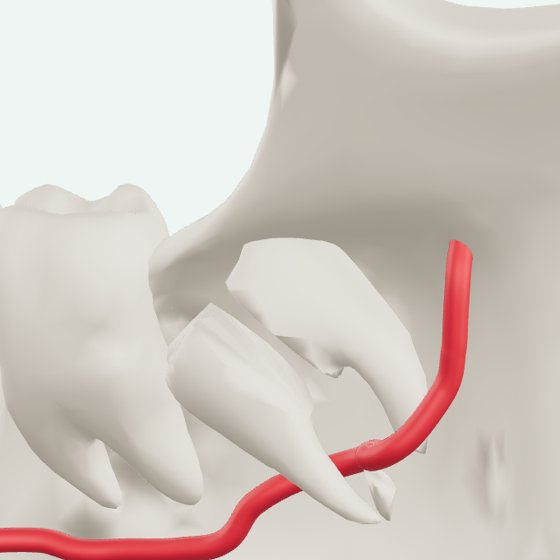
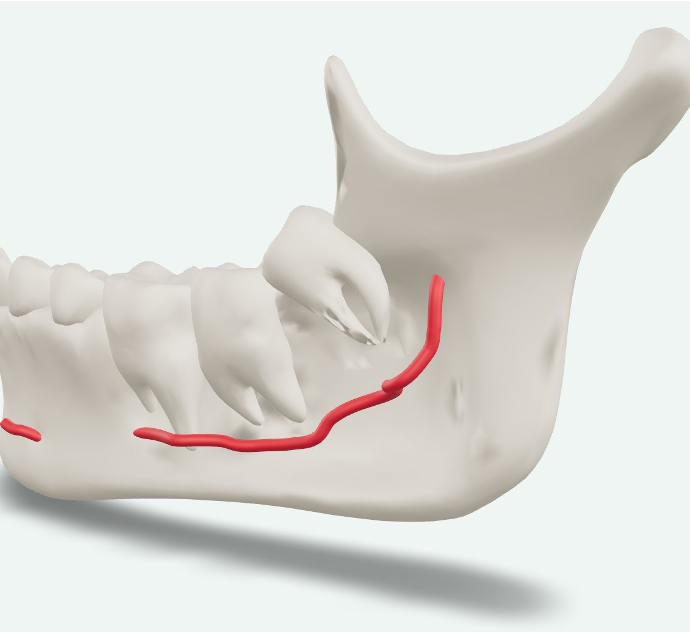
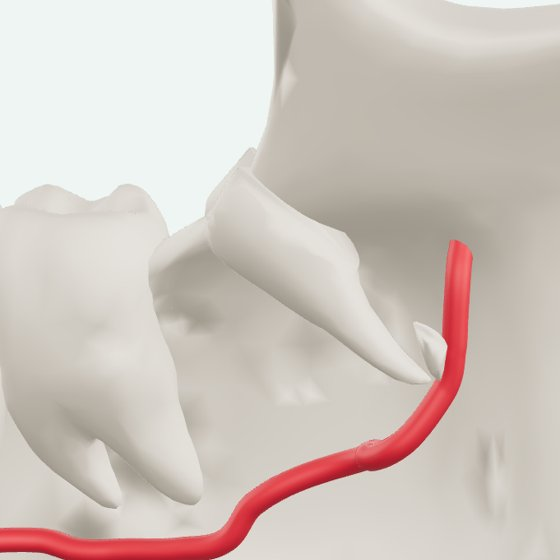
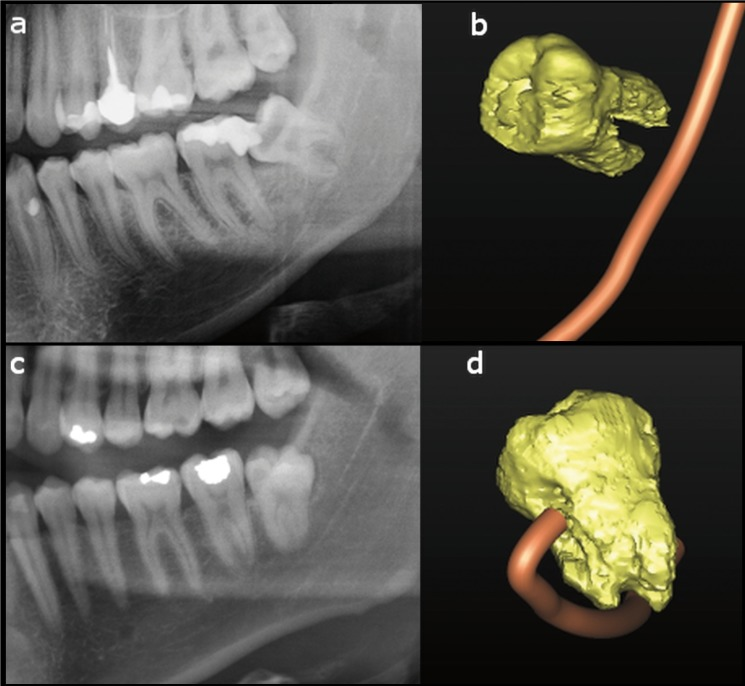
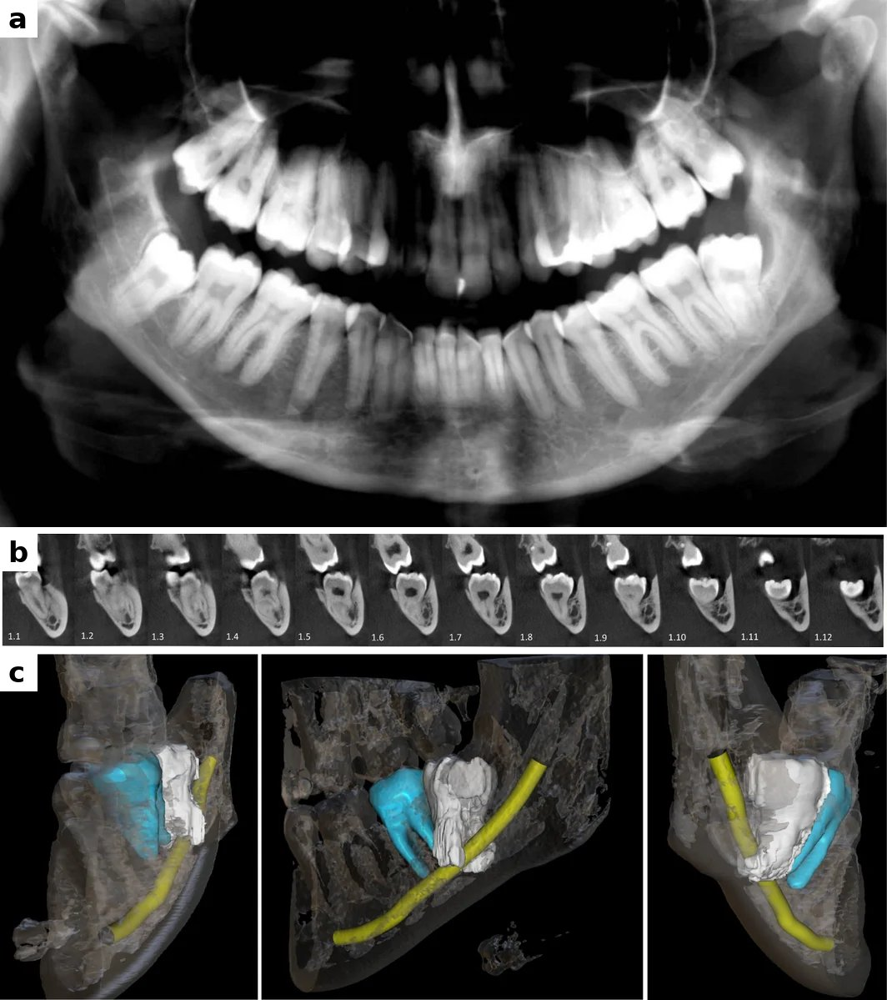

Impacted lower wisdom tooth and the nerve near it
Every person is different
The shape of the tooth, where the nerve is, and the risks can be very different from person to person. So the facts here are general. They are not advice for one person. Before any treatment, the dentist or surgeon will talk with each person in detail about the benefits, risks and choices.
Look at the 3D model. Each number below is also on a sticker on the model.
- Jaw bone and teeth
- Nerve, artery and vein (in their canal)
Parts of the model
1Jaw nerve (inferior alveolar nerve)
- Gives feeling to the lower teeth, gums, lip and chin on this side.
- Runs in a tube in the bone with the inferior alveolar artery and vein. These can also be hurt.
- If the nerve is hurt, the area can feel numb, have pins and needles, feel strange or hurt. This can be short-term or long-term.
- In older adults, damage is more likely, and less likely to heal fully.
2Roots of the wisdom tooth
- The roots wrap around the jaw nerve.
- So taking the tooth out can hurt the nerve.
3Wisdom tooth (third molar)
- Impacted: stuck under the gum and bone.
- Unerupted: it has not come through the gum.
4First and second molars
- Big back teeth used to chew.
- The wisdom tooth sits behind them.
5First and second premolars
- The teeth in front of the molars.
- They also help to chew.
6Chin nerve (mental nerve)
- A branch of the jaw nerve. It comes out of the bone through a small hole (the mental foramen).
- Gives feeling to the lower lip and chin.
- If the jaw nerve is hurt further back, the lip and chin can feel different too.
7Jaw bone (mandible)
- The jaw nerve, artery and vein run in a tube inside this bone.
How the tooth comes out



What is the problem?
The wisdom tooth is the last tooth at the back. Its other name is the third molar. An impacted lower wisdom tooth is stuck under the gum and bone. It has not come through the gum (it is unerupted). It cannot grow in the right way.
The nerve
A nerve runs in a tube of bone inside the lower jaw. Here it is called the jaw nerve. Its medical name is the inferior alveolar nerve. Two blood vessels run with it in the same tube. They are the inferior alveolar artery and vein.1
The jaw nerve gives feeling to the lower teeth and gums on the same side.2 Near the front of the jaw, a branch of it comes out of the bone through a small hole. This branch is the chin nerve (mental nerve). It gives feeling to the lower lip and chin.3
The tongue gets its feeling from a different nerve, the lingual nerve. It can also be hurt when a wisdom tooth is taken out.4 Lasting damage to it is rare. It happens to about 1 to 3 in 1,000 people.5 The tongue nerve is not shown in this model.
In this model, the roots of the wisdom tooth wrap around the nerve and artery.
Why taking the tooth out can hurt the nerve
To take the tooth out, the roots must come out of the bone. The roots curve around the nerve. So the nerve can be pressed, stretched or cut as the roots come out. The artery and vein can also be hurt and bleed.1
If the jaw nerve is hurt, the chin nerve may also stop working well. This is because it is a branch of the jaw nerve.3
What nerve damage feels like
The lower lip, chin, teeth or gums on that side may:2
- feel numb
- tingle, like pins and needles
- feel different, or strange
- hurt. Even a light touch may hurt.4
The lip and face can still move as normal.2
Short-term: the feeling comes back. This most often takes weeks to months.2
Long-term: the feeling does not fully come back.2
Age: the risk of nerve damage is higher in people over about 24 years old.2 In older people, the feeling is also less likely to come back fully.6 One small study followed people for 5 years. Everyone under 30 got full feeling back. Only 3 of 8 people over 30 did.7 Studies do not agree on one exact age.
How often does it happen?
Some wisdom teeth have roots close to the nerve. A review of 16 studies looked at these teeth. It found:8
Why a 3D scan can help
The usual dental X-ray of the whole mouth is called an OPG. OPG is short for orthopantomogram. It is also called a panoramic X-ray. It is a flat picture. On a flat picture, the roots can look like they touch the nerve, even when they do not.9 Some signs on an OPG can warn that the roots are close to the nerve.10
A CBCT scan is a 3D X-ray. CBCT is short for cone beam computed tomography. It can show if the roots really touch the nerve. It also shows which side of the roots the nerve is on.9 Studies show it does this better than an OPG.11

The next pictures show what each scan looks like. They are of one person's lower wisdom tooth. The nerve runs between its roots.12

A CBCT scan uses more X-ray than an OPG. So it is used when an OPG shows the roots may be close to the nerve.9
Risks of taking the tooth out
After the tooth is taken out, it is common to have pain, swelling and a stiff jaw that is hard to open. These most often last only a short time.13
Less often, the hole where the tooth was can get infected. Or the blood clot in the hole can come out. This leaves a painful “dry socket”.13 The nerves can also be hurt, as shown above.13
Risks of leaving the tooth in
A wisdom tooth that stays in can cause problems later. These include:14
- infection of the gum over the tooth
- gum disease or decay in the tooth in front
- harm to the roots of the tooth in front
- a cyst (a sac of fluid) around the tooth
In one review, about 4 in 100 impacted wisdom teeth that were taken out had a cyst.15 So a tooth that stays in needs regular check-ups.14
The dentist or surgeon will talk in detail about the risks and the best choice for each person.
Choices your dentist/surgeon might offer
- Leave the tooth in and check it often, if it is not causing problems.
- Coronectomy: take out only the top of the tooth. Leave the roots around the nerve. In the same review, about 1 in 200 people had nerve damage after this.8 But the roots can move. Once in a while they need to come out later.
- Take out the whole tooth. This is often a surgical extraction. A small cut is made in the gum. If bone is in the way of the tooth, some of it may be removed.
Before any treatment, the dentist or surgeon will explain the benefits, risks and choices in much more detail.
Questions you could ask your dentist/surgeon
- How close are the roots to the nerve?
- What is the risk of nerve damage in this case?
- Is a CBCT scan needed?
- Is a coronectomy a good choice in this case?
- What happens if the tooth is left in?
Sources
- Juodzbalys G, Wang HL, Sabalys G. Anatomy of mandibular vital structures. Part I: mandibular canal and inferior alveolar neurovascular bundle in relation with dental implantology. J Oral Maxillofac Res. 2010;1(1):e2. doi.org/10.5037/jomr.2010.1102
- Sarikov R, Juodzbalys G. Inferior alveolar nerve injury after mandibular third molar extraction: a literature review. J Oral Maxillofac Res. 2014;5(4):e1. doi.org/10.5037/jomr.2014.5401
- Juodzbalys G, Wang HL, Sabalys G. Anatomy of mandibular vital structures. Part II: mandibular incisive canal, mental foramen and associated neurovascular bundles in relation with dental implantology. J Oral Maxillofac Res. 2010;1(1):e3. doi.org/10.5037/jomr.2010.1103
- Renton T, Yilmaz Z. Profiling of patients presenting with posttraumatic neuropathy of the trigeminal nerve. J Orofac Pain. 2011;25(4):333-344. PMID 22247929. pubmed.ncbi.nlm.nih.gov/22247929
- Lee J, Feng B, Park JS, et al. Incidence of lingual nerve damage following surgical extraction of mandibular third molars with lingual flap retraction: a systematic review and meta-analysis. PLoS One. 2023;18(2):e0282185. doi.org/10.1371/journal.pone.0282185
- Queral-Godoy E, Valmaseda-Castellón E, Berini-Aytés L, et al. Incidence and evolution of inferior alveolar nerve lesions following lower third molar extraction. Oral Surg Oral Med Oral Pathol Oral Radiol Endod. 2005;99(3):259-264. doi.org/10.1016/j.tripleo.2004.06.001
- Kjølle GK, Bjørnland T. Low risk of neurosensory dysfunction after mandibular third molar surgery in patients less than 30 years of age. A prospective study following removal of 1220 mandibular third molars. Oral Surg Oral Med Oral Pathol Oral Radiol. 2013;116(4):411-417. doi.org/10.1016/j.oooo.2013.06.024
- Rico-Barroso L, Barroso-Medel M, Gutiérrez-Pérez J, et al. Coronectomy as an alternative technique to complete extraction of mandibular third molars with risk of nerve injury. Med Oral Patol Oral Cir Bucal. 2026;31(1):e19-e30. doi.org/10.4317/medoral.27459
- Rodriguez y Baena R, Beltrami R, Tagliabo A, et al. Differences between panoramic and Cone Beam-CT in the surgical evaluation of lower third molars. J Clin Exp Dent. 2017;9(2):e259-e265. doi.org/10.4317/jced.53234
- Rood JP, Shehab BA. The radiological prediction of inferior alveolar nerve injury during third molar surgery. Br J Oral Maxillofac Surg. 1990;28(1):20-25. doi.org/10.1016/0266-4356(90)90005-6
- Reia VCB, de Toledo Telles-Araujo G, Peralta-Mamani M, et al. Diagnostic accuracy of CBCT compared to panoramic radiography in predicting IAN exposure: a systematic review and meta-analysis. Clin Oral Investig. 2021;25(8):4721-4733. doi.org/10.1007/s00784-021-03942-4
- Marquez Rocco V, Thor A, Hashim AA, et al. Root migration after coronectomy of a mandibular third molar with the inferior alveolar nerve passing between the roots: a case report. Clin Case Rep. 2026;14(10):e73673. doi.org/10.1002/ccr3.73673
- Bailey E, Kashbour W, Shah N, et al. Surgical techniques for the removal of mandibular wisdom teeth. Cochrane Database Syst Rev. 2020;7(7):CD004345. doi.org/10.1002/14651858.CD004345.pub3
- Ghaeminia H, Nienhuijs ME, Toedtling V, et al. Surgical removal versus retention for the management of asymptomatic disease-free impacted wisdom teeth. Cochrane Database Syst Rev. 2020;5(5):CD003879. doi.org/10.1002/14651858.CD003879.pub5
- Mello FW, Melo G, Kammer PV, et al. Prevalence of odontogenic cysts and tumors associated with impacted third molars: a systematic review and meta-analysis. J Craniomaxillofac Surg. 2019;47(6):996-1002. doi.org/10.1016/j.jcms.2019.03.026
This sheet is for a research study at Nagoya University. Version 1.0, 16 October 2026.